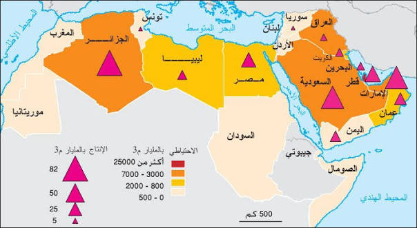
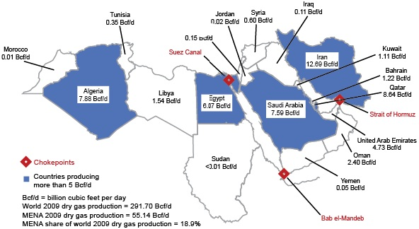
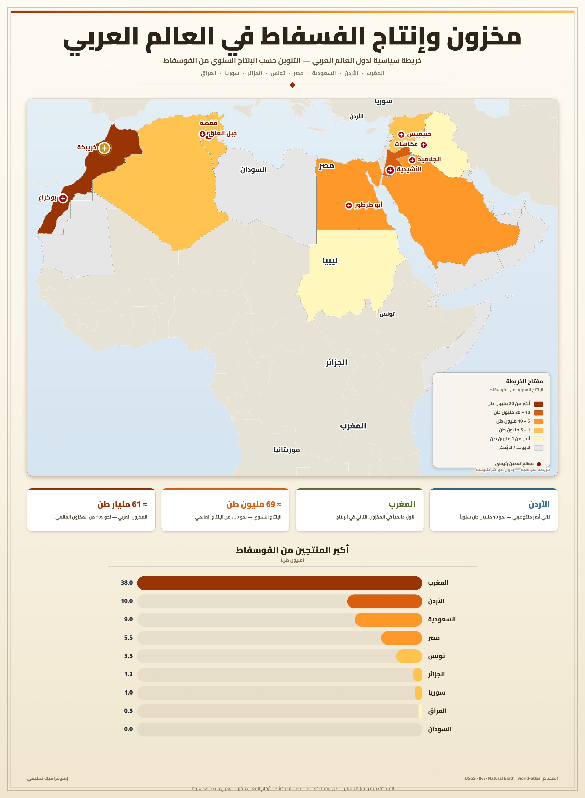
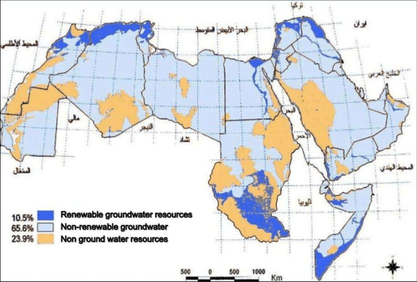
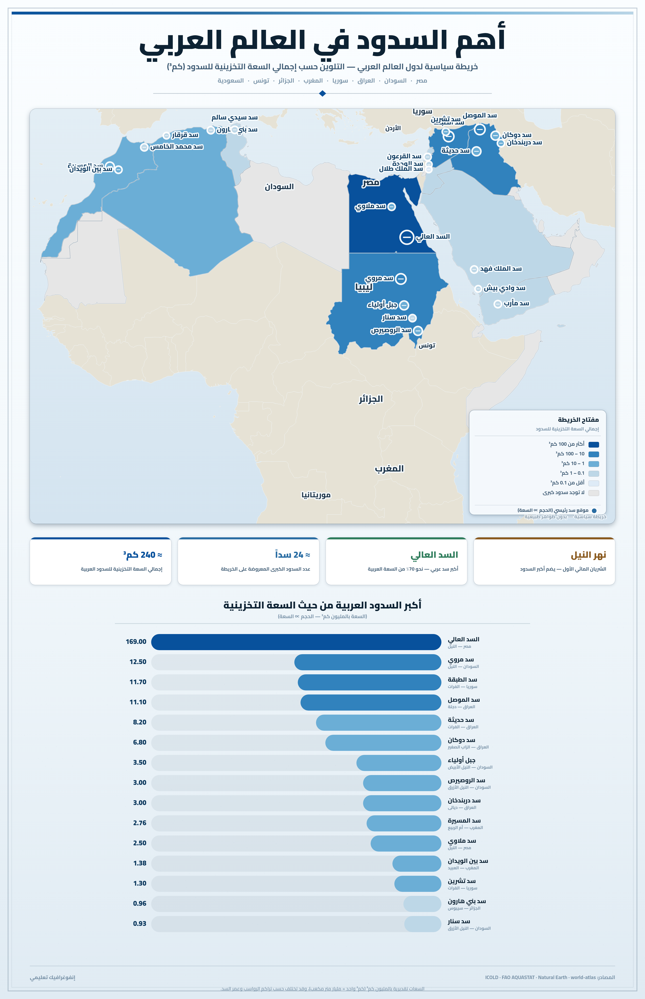

العالم العربي: الموارد الطبيعية
مقدمة
يوفّر المجال العربي موارد طبيعية متنوّعة منها سوائل المحروقات والموارد المنجمية والمائية، ولكنّها تتميّز بالتركّز الجغرافي الشديد وبضعف مساهمتها في التنمية الاقتصادية والاجتماعية. فبينما تتركّز سوائل المحروقات في الجناح الآسيوي، يوفّر الجناح الإفريقي الجزء الأكبر من الثروة المنجمية والموارد المائية المتجدّدة.
ما هي أهم الموارد الطبيعية في العالم العربي؟ وكيف تتوزّع جغرافيًا؟ وما مدى مساهمتها في التنمية؟
I سوائل المحروقات: ثروة هائلة وتوزّع جغرافي متفاوت
1. احتياطي هائل وإنتاج ضخم
أ. نحو ثلثي الاحتياطي العالمي من النفط
بلغ حجم الاحتياطي المؤكّد من النفط في الدول العربية (مطلع سنة 2007) نحو 668,2 مليار برميل، وهو ما يشكّل 57,6% من الاحتياطي العالمي. ويزيد حجم الاحتياطي العربي من النفط سنة تلو الأخرى (631,37 مليار برميل مطلع سنة 2000) رغم ارتفاع معدّلات الإنتاج، وذلك بفضل استمرار عمليات التنقيب وما تسفر عنه من اكتشافات لحقول جديدة بلغ عددها 39 بئرًا نفطيًا في سنة 2006 فقط. وتبلغ المدّة المقرّرة لاستهلاك هذا الاحتياطي العربي نحو 79,44 سنة إذا ما تواصل الإنتاج على نسقه، بينما يقدّر عمر الاحتياطي العالمي بـ 40,5 سنة فحسب. ويرتفع طول عمر الاحتياطي إلى أكثر من 100 سنة في كلّ من العراق والكويت.
ب. حوالي ثلث الإنتاج العالمي من السوائل الهيدروكربونية
بلغ الإنتاج العربي من النفط الخام (سنة 2006) نحو 23,044 مليون برميل/يوم، أي 31,8% من الإنتاج العالمي. وأنتج العالم العربي 3,460 مليون برميل/يوم من سوائل الغاز الطبيعي المصاحب للنفط، وبذلك يكون إجمالي الإنتاج العربي من السوائل الهيدروكربونية 26,504 مليون برميل/يوم، أي 32,74% من الإنتاج العالمي.
ج. ربع الاحتياطي العالمي من الغاز الطبيعي
يصاحب احتياطي الغاز الطبيعي حقول النفط في أغلب الأحيان (غاز مصاحب للنفط) كما يوجد أيضًا في حقول مستقلة. وقد تضاعف الاحتياطي العربي من الغاز الطبيعي ثلاث مرات ونصف (3,54 مرة) خلال العقدين الأخيرين (1986–2006)، حيث قُدّر في مطلع سنة 2007 بـ 53,433 ترليون م³، وذلك بفضل عمليات الاستكشاف والحفر المتواصلة. فقد تحقّق خلال سنة واحدة (2006) اكتشاف 49 بئرًا غازية جديدة. ويمثّل هذا الاحتياطي العربي 29,4% من الاحتياطي العالمي في مطلع سنة 2007 مقابل 15,92% سنة 1983. وتبلغ المدّة المقرّرة لاستهلاك هذا الاحتياطي العربي نحو 150,42 سنة، بينما يقدّر عمر الاحتياطي العالمي بـ 63,3 سنة فحسب.
د. إنتاج الغاز في تزايد مستمر
بلغ إنتاج الدول العربية من الغاز الطبيعي المسوّق (سنة 2006) نحو 355,207 مليار م³، أي 12,5% من الإنتاج العالمي. ولا يشتمل الغاز المسوّق كميات الغاز المحروق أو المعاد حقنه في المكامن أو الفاقد. وقد بلغت نسبة استخدام الغاز الطبيعي (الغاز المسوّق) لإجمالي الإنتاج العربي (في مطلع سنة 2004) 70,2% مقابل 30,7% سنة 1973، في حين يتمّ حقن معظم الغاز غير المسوّق في المكامن النفطية لتحسين إنتاجيتها.
2. تركّز شديد لسوائل المحروقات بالجناح الآسيوي
يتركّز الاحتياطي العربي من النفط في إقليم الخليج بنسبة 90,41%. وتستأثر المملكة العربية السعودية بالنصيب الأكبر من الاحتياطيين العربي والعالمي، حيث قُدّر في مطلع سنة 2007 بـ 264,25 مليار برميل، أي 39,54% من الاحتياطي العربي و21,87% من الاحتياطي العالمي. وتليها العراق (115,0 مليار برميل) فالكويت (101,5 مليار برميل).
وتوفّر المملكة العربية السعودية بمفردها 9,208 مليون برميل/يوم، أي 40,25% من الإنتاج العربي و12,78% من الإنتاج العالمي من النفط (سنة 2006)، ممّا يجعلها في مرتبة الصدارة عالميًا، تليها الكويت (2,664 م ب/ي) فالإمارات (2,568 م ب/ي). وباعتبار سوائل الغاز الطبيعي، يرتفع إنتاج المملكة العربية السعودية إلى 10,859 م ب/ي، أي 13,1% من الإنتاج العالمي.
وقد تعزّزت مكانة إقليم الخليج الغازية منذ سنة 1983 حين تفوّقت مدّخرات قطر والسعودية والإمارات، كلّ على حدة، على الاحتياطي الجزائري الذي استمرّ في الزيادة. وتتبوّأ دولة قطر مرتبة الصدارة عربيًا بفضل مدّخراتها التي قُدّرت في مطلع سنة 2007 بـ 25,361 ترليون م³، أي 48,27% من الاحتياطي العربي، وهي تحتل المرتبة الثالثة عالميًا (بعد روسيا وإيران) بـ 14% من الاحتياطيات العالمية من الغاز الطبيعي. ولكن لا تزال الجزائر أوّل منتج عربي للغاز الطبيعي بـ 84,467 مليار م³ من الغاز المسوّق (2006)، أي 25,36% من الإنتاج العربي و2,9% من الإنتاج العالمي، وتليها السعودية (73,7 مليار) وقطر (49,5) فالإمارات (47,4).
3. عائدات مالية ضخمة ودور محدود في التنمية الاقتصادية
أ. أهمية ريع المحروقات في اقتصادات البلدان النفطية
بلغت عائدات الدول العربية من صادرات المحروقات (سنة 2006) نحو 424 مليار دولار بالأسعار الجارية، وهو أرفع مستوى من المداخيل منذ سنة 1980 حين بلغت 398,7 مليار دولار، بينما لم تزد على 136 مليار دولار سنة 2001. وترتبط قيمة العائدات بمعدّلات النموّ الاقتصادي وبحجم الطلب على المحروقات وبمستويات الأسعار، فقد ارتفعت أسعار النفط الخام بنسبة 157,6% بين سنتي 2002 و2006. وتنفرد المملكة العربية السعودية بـ 40,42% من قيمة صادرات المحروقات العربية (سنة 2006) حيث بلغت 171,422 مليار دولار، تليها الإمارات (52,437 مليار دولار) فالكويت (48,859 مليار دولار).
وتعيد بعض هذه الدول استثمار عائداتها النفطية (أو البترودولارات) في الأسواق المالية الدولية، فأصبحت بذلك رهينة الأوضاع الاقتصادية في البلدان الصناعية المتقدّمة. فقد قُدّرت قيمة الاستثمارات العربية المباشرة في العالم بين سنتي 1996 و2005 بـ 27,004 مليار دولار، وبلغت قيمة المقتنيات الاستثمارية العربية 37,635 مليار دولار (1996–2005). ولكن هذه العائدات ساهمت في دفع الأنشطة الاقتصادية حيث أرست دعائم الصناعة الحديثة (وخاصة البتروكيمياء والتعدين) وركّزت شبكة اتصالات عصرية وتدعّمت البنية الأساسية في قطاعي التعليم والصحة.
ب. دور عائدات المحروقات في التحوّل الاجتماعي
أدّت العائدات المالية إلى تحوّلات جذرية في مجتمعات الدول العربية النفطية، وتتجلّى بالخصوص في:
- ارتفاع مستوى العيش بفضل إعادة توزيع جزء من المداخيل النفطية في شكل أجور مرتفعة وخدمات مجانية. فقد بلغ متوسط دخل الفرد من الصادرات النفطية سنة 2006 في قطر 21,219 دولارًا، وفي الكويت 17,136 دولارًا، وفي الإمارات 11,970 دولارًا، مقابل 17,58 دولارًا فقط في مصر.
- ارتفاع نسب التحضّر.
- انفتاح هذه المجتمعات على النمط الاستهلاكي الغربي.
- توافد اليد العاملة الأجنبية.
- تنمية اجتماعية واضحة المعالم في جلّ القطاعات (الصحة، التعليم، السكن...).
ج. حدود أثر الثورة النفطية
لم تساهم العائدات النفطية في تحقيق التنمية الشاملة، ويتجلّى ذلك من خلال:
- ارتباط عدّة أنشطة باليد العاملة الأجنبية رغم حملات الطرد الأخيرة.
- تراجع الأنشطة الحرفية بسبب هيمنة الصناعات الحديثة القائمة على تحويل المحروقات.
- ارتباط التوطين الصناعي بالمحروقات حيث أقيمت مدن صناعية ونفطية وموانئ تصدير للغرض.
- توظيف جزء هام من العائدات النفطية في تمويل الواردات من المواد الغذائية والصناعية.
د. تأثّر العائدات بتقلّب أسعار المحروقات
بلغ السعر الاسمي لسلّة نفوط أوبك المعياري (سنة 2006) نحو 61 دولارًا للبرميل الواحد (50,9 دولار بالسعر الحقيقي لسنة 1995) مقارنة بـ 23,1 دولار سنة 2001. وخلال شهر سبتمبر 2007 بلغ متوسط السعر الاسمي لسلّة نفوط أوبك 74,18 دولارًا. وتتصف السوق العالمية للمحروقات بالتذبذب الكبير: فقد ارتفع السعر الاسمي لسلّة نفوط أوبك المعيارية بحوالي 5 أضعاف بين 1970 و1974 (من 2,1 دولار للبرميل إلى 10,4 دولار)، وبلغ الذروة سنة 1980 حين بلغ 36 دولارًا للبرميل (67 دولارًا بالسعر الحقيقي) عقب الثورة الإسلامية في إيران، ثمّ انخفض إلى أدنى مستوياته عامي 1986 (13 دولارًا/برميل) و1998 (12,3 دولارًا/برميل).
II موارد منجمية متواضعة باستثناء الفسفاط
1. إنتاج هامّ للفسفاط
يحتضن العالم العربي 38,33% من المدخرات العالمية المؤكّدة من صخور الفسفاط (سنة 2006). ويوجد هذا الاحتياطي المؤكّد في المغرب والصحراء الغربية (5,7 مليار طن – المرتبة الثانية في العالم بعد الصين) وفي السعودية (1,6 مليار طن) وفي الأردن (900 مليون طن) ثمّ على التوالي في سورية ومصر وتونس (100 مليون طن لكلّ منها) فالعراق والجزائر. ويساهم العالم العربي بحوالي الثلث (32,02%) من الإنتاج العالمي من خام الفسفاط بـ 46,440 مليون طن (2006). ويتمّ هذا الإنتاج في المغرب والصحراء الغربية (25,3 مليون طن سنة 2006) وتونس (7,813 مليون طن) والأردن (6,4 مليون طن) ثمّ سورية ومصر والجزائر.
ويساهم العالم العربي بنحو 65,6% من الصادرات العالمية من الفسفاط بنحو 19,148 مليون طن (2003). ويتصدّر المغرب قائمة المصدّرين بنحو 45,03% يليه الأردن (10,97%) فتونس بـ 7,39% من الصادرات العالمية (سنة 2006).
2. تركّز إنتاج الموارد المنجمية بالجناح الإفريقي
يظلّ إنتاج بقية الموارد المنجمية الفلزية متواضعًا. فرغم أهمية مدخرات العالم العربي من الحديد (12,4 مليار طن سنة 2005)، أي 7,75% من الاحتياطي العالمي، وخاصة في ليبيا (3,1 مليار طن) والسعودية (2,6 مليار طن) والسودان (2,34 مليار طن) وفي موريتانيا (2,29 مليار طن)؛ فإنّ الإنتاج العربي لا يزيد على 15,284 مليون طن (سنة 2005)، أي 0,98% من الإنتاج العالمي، وخاصة في موريتانيا (10,7 مليون طن) ومصر (2,5 مليون طن) فالجزائر (1,878 مليون طن).
ويتوفّر النحاس خاصة في المغرب (89,69% من الإنتاج العربي سنة 2005) والجزائر والسعودية، والذهب في السودان (45,405 كغ من إنتاج الذهب الخالص سنة 2005) والسعودية (7,456 كغ) والمغرب (1,500 كغ) وفي الجزائر (641 كغ) وعُمان (600 كغ) ومؤخّرًا في اليمن. ويتوفّر الزنك في المغرب (68,52% من الإنتاج العربي سنة 2005) وتونس والجزائر والسعودية، والرصاص بالمغرب (69,78% من الإنتاج العربي سنة 2005) وعُمان والسعودية وتونس.
ولا زالت مساحات هامّة من العالم العربي لم يقع استكشافها منجميًا، وتقدّر هذه النسبة بـ 80% في الأراضي المغربية وخاصة في جبال الأطلس التي تحتوي على ثروات هامّة من الذهب والفضة والكوبالت وفق المسوحات الأولية. لكنّ استغلال هذه الثروات المنجمية يستوجب توظيف استثمارات هامّة لم يحض بها هذا القطاع على غرار قطاع المحروقات الذي حظي بالأولوية المطلقة خاصة في السعودية وليبيا.
3. ضعف الدور التنموي للموارد المنجمية
تراجعت مساهمة الصناعة الاستخراجية في الاقتصاد العربي عمّا كانت عليه. فقد بلغ ناتج الصناعة الاستخراجية العربية (سنة 2005) حوالي 414,414 مليار دولار، أي 38,8% من الناتج المحلي الإجمالي العربي. وتتفاوت هذه النسبة من قطر عربي إلى آخر، حيث ترتفع في الدول المصدّرة للنفط (81,7% في العراق) بينما تنخفض في بقية الدول (1,6% في المغرب و0,5% في جيبوتي و0% في لبنان).
وتتأثّر مساهمة القطاع الاستخراجي بتذبذب أسعار المنتوجات الطاقية والمنجمية ونسبة مساهمتها في الصادرات العربية. فبعد أن سجّلت الأسعار الدولية للمواد المنجمية هبوطًا حادًّا بين 1997 و2003، ولا سيما خام الفسفاط (منذ سنة 2000) حيث تراجع بـ 5,9% سنة 2003 فقط؛ فقد انتعشت الأسعار منذ سنة 2003 حيث ارتفعت بنسبة 219,9% بين 2002 و2006، ولكن بشكل متفاوت (9,5% للفسفاط و160% للحديد الخام و331,1% للنحاس).
ولئن ظلّ القطاع الاستخراجي العربي عاجزًا عن دفع حركة التصنيع إجمالًا؛ فقد ساهمت بعض الموارد مثل الفسفاط في خلق صناعة عربية متواضعة للأسمدة، ولكنّها لا تضاهي صناعة تكرير النفط والصناعات البتروكيمائية في العالم العربي.
III الموارد المائية في العالم العربي
1. الموارد المائية المتاحة
تعتبر الدول العربية من أكثر مناطق العالم فقرًا للموارد المائية، حيث لا تزيد الموارد العربية المتجدّدة على 1% من المياه المتجدّدة على المستوى العالمي. ويقدّر مجموع الموارد المتاحة في العالم العربي بحوالي 338 مليار م³، وتنقسم إلى صنفين: موارد تقليدية (موارد مائية سطحية وأخرى جوفية) وموارد غير تقليدية.
أ. موارد مائية سطحية في أغلبها خارجية
تقدّر الموارد المائية السطحية المتجدّدة بحوالي 296 مليار متر مكعّب. ويأتي أكثر من ثلثي هذه الموارد المائية السطحية من خارج الدول العربية عبر الأنهار الدخيلة، وهي نهر النيل ونهري دجلة والفرات ونهري شبلي وجوبا ونهر السنغال. وهي تكوّن 54% من المياه السطحية المستخدمة في الدول العربية. أمّا الأنهار المحلية التي تنبع داخل العالم العربي فلا نجدها إلا في المناطق المطيرة وخاصة في إقليم الشام حيث الأنهار أقصر ولكنّها أغزر وأكثر انتظامًا من سواها.
وتتوزّع هذه الموارد كالآتي:
- 38,5% في الإقليم الأوسط (إقليمي وادي النيل والقرن الإفريقي).
- 37% في المشرق العربي (إقليم الهلال الخصيب: الشام والعراق).
- 19,7% في إقليم المغرب العربي.
- 4,8% في شبه الجزيرة العربية (إقليم الخليج ناقص العراق).
وتشكّل الأمطار السنوية أهمّ مصدر للمياه السطحية المتجدّدة. ويقدّر الوارد المطري السنوي في الدول العربية بحوالي 2,285 مليار متر³. ويبلغ متوسط نصيب وحدة المساحة من المياه السطحية الجارية في المنطقة العربية حوالي 0,66 لتر/ثانية/كم² مقابل 9,5 لتر/ثانية/كم² على المستوى العالمي.
ب. موارد مائية جوفية ضخمة ولكن أغلبها غير متجدّدة
يتميّز التكوين الجيولوجي للعالم العربي بوجود طبقات رسوبية سميكة مسامية وكتيمة تساعد كثيرًا على وجود طبقات مائية جوفية ضخمة، بعضها متجدّد (على سواحل البحر المتوسط الشرقية والجنوبية وفي مجاري الأنهار والأودية والسيول)، وبعضها الآخر غير متجدّد (إقليمي الصحراء الكبرى وشبه الجزيرة العربية).
ويقدّر الحجم الكلّي لمخزون الأحواض المائية الجوفية في المنطقة العربية بحوالي 7,734 مليار م³، في حين أنّ التغذية السنوية لهذه الأحواض تقدّر بحوالي 42 مليار م³/س، والمتاح منها لا يتعدّى 35 مليار م³/س. ويتجمّع أكثر من ثلث هذه الموارد في إقليم المغرب العربي وأكثر من الخُمسين (2/5) في الإقليم الأوسط (وادي النيل والقرن الإفريقي).
وتتوزّع هذه الموارد على أحواض مائية بعضها مشترك بين الدول العربية ودول الجوار. ومن أهمّ هذه الأحواض:
- حوض الصحراء الغربية (بين مصر وليبيا والسودان): ويقدّر حجم مخزونه بـ 6000 مليار م³، ويتغذّى طبيعيًا بنحو 1500 مليون م³ في السنة.
- حوض دلتا النيل (مصر): 3000 مليار م³ – 2600 مليون م³/س.
- العرق الغربي الكبير (الجزائر): 1500 مليار م³ – 400 مليون م³/س.
- العرق الشرقي الكبير (بين تونس والجزائر): 1,7 مليار م³ – 600 مليون م³/س.
- حوض فزّان (جنوب غرب ليبيا): 0,4 مليار م³ – 60 مليون م³/س.
- حوض تنزروفت (الجزائر): 0,4 مليار م³ – 20 مليون م³/س.
ج. الموارد المائية غير التقليدية
ويقدّر حجمها بنحو 10,6 مليار م³، منها نحو 2,5 مليار م³ من المياه المحلاة (منها 714 مليون م³/سنة بالسعودية تليها الإمارات فالكويت)، وحوالي 8,1 مليار م³ من مياه الصرف الصحي المعالجة والمستخدمة في الدول العربية للأغراض الزراعية.
2. أشكال التعبئة
بغرض تعبئة مواردها المائية السطحية واستغلالها في توفير مياه الشرب والري وتوليد الكهرباء؛ أقامت عدّة دول عربية شبكة من السدود الكبرى والخزانات أهّلتها لبلوغ أرفع معدّلات تعبئة المياه المتجدّدة في العالم (84% مقابل متوسط عالمي لا يزيد على 10,2%). وحقّقت مصر (289,9%) والعراق (66,6%) أرفع نسب التعبئة بفضل:
- السدّ العالي بمصر: وهو من أهمّ السدود في العالم، واستمرّ تشييده أكثر من 10 سنوات (1960–1971)، ويبلغ ارتفاعه 196 مترًا، وتبلغ سعة حوض التخزين 162 مليار متر مكعب.
- المنشآت المائية في العراق: وتتمثّل بالخصوص في سدود الهندية (شُيّد سنة 1913 وجُدّد سنة 1988) والرمادي (1951) والفلوجة (1986) والقادسية (1988) وخزّان الحبانية على نهر الفرات، وسدّ الكوت وخزّانات وادي الثرثار (45 مليار متر³) على نهر دجلة.
- السدود في المغرب: وهي أكبر سدود المغرب العربي، من بينها سدّ بين الويدان (3,5 مليار م³).
- التجهيزات المائية في تونس: وتشتمل على 9172 منشأة بطاقة تعبئة إجمالية قدرها 1,6 مليار متر³: 21 سدًّا تخزينيًا تبلغ طاقة تعبئتها 739 مليون م³/س، و203 سدًّا جبليًا تبلغ طاقة تعبئتها 110 ملايين م³/س، و1000 بحيرة جبلية بطاقة تعبئة إجمالية قدرها 50 مليون م³/س.
ولكن رغم هذه المنجزات، لا تزيد نسبة استغلال المياه السطحية العربية على 50% من الكميات المتوفّرة بسبب تحكّم دول غير عربية (مثل تركيا وإثيوبيا) في منسوب الأنهار الدخيلة وتعرّض مياه الأودية للتلوّث ونقص الموارد المالية والمهارات الفنية. وقدّرت دراسة أممية أنّ تحسين كفاءة استخدام المياه بحدود 70% قد يساهم في توفير نحو 28,4 مليار متر³ من مياه الري الزراعي في السنة، تكفي لري مساحات إضافية تتراوح بين 3 و6 مليون هكتار.
ولا يزال استغلال المياه الجوفية العربية محدودًا جدًّا (أقلّ من 1%) بسبب ضعف نسبة الموارد المتجدّدة منها (0,5%) ولارتفاع حرارتها وملوحتها أحيانًا فضلًا عن الكلفة المالية الباهظة، وذلك رغم إقامة عدّة مشاريع ضخمة من بينها:
- في ليبيا: النهر الاصطناعي العظيم الذي يغذّي طرابلس وبنغازي والمساحات المروية في الشمال بمياه أحواض فزّان وتازربو والسرير بطاقة تصميمية تصل إلى 3,6 مليون م³ يوميًا.
- في تونس: حفر 2400 بئر عميقة استُخرج بواسطتها 1,178 مليار م³ (2005)، وهو ما يمثّل 83,72% من الموارد المائية الجوفية التونسية القابلة للاستغلال والمقدّرة بـ 1,498 مليار م³ (2004)، منها 1,216 مليار م³ موارد متجدّدة.
3. الموازنة المائية
وتتمثّل في مدى التوافق بين الموارد المائية المتاحة والطلب على المياه. وباعتبار جملة المصادر المائية المتجدّدة والمتاحة، تصل نسبة سحب المياه في المنطقة العربية إلى 105% مقابل متوسط عالمي بـ 9,1%. وتتفاوت هذه النسبة من قطر إلى آخر، حيث تتجاوز عتبة الضغط المائي (100%) في 10 أقطار، وهي تتراوح بين 2200% في الكويت و114,8% في الأردن، بينما هي دون مستوى الضغط في بقية البلدان.
ويقيس الخبراء توافر المياه على أساس كمية المياه العذبة المتجدّدة سنويًا للفرد الواحد. وتعاني الأقطار "ضغطًا مائيًا" عندما تتراوح هذه الكمية بين 1000 م³ و1700 م³. وفي الدول التي تعاني من "ندرة المياه" يبلغ هذا المقدار أقلّ من 1000 م³، وهو مستوى "خط الفقر المائي".
ويبلغ متوسط نصيب الفرد السنوي من المياه العذبة المتجدّدة في العالم العربي 746 م³ مقابل 6791 م³ على المستوى العالمي. ويقع 15 قطرًا عربيًا تحت "خط الفقر المائي"، وأبرزها الكويت (8 م³/ف/س) والإمارات (51 م³/ف/س) وقطر (88 م³/ف/س) [تونس 472]، بينما لا زالت بقية الأقطار تعاني من "الضغط المائي" باستثناء العراق (3077 م³/ف/س).
ويُستخدم من المياه المستغلة حوالي 88,68% في الزراعة و8% في الاستعمالات المنزلية و5% في الصناعة.
خاتمة
تتميّز الموارد الطبيعية بتفاوت توزّعها المجالي بين البلدان العربية. فبينما تتركّز سوائل المحروقات في الجناح الآسيوي؛ يوفّر الجناح الإفريقي الجزء الأكبر من الثروة المنجمية والموارد المائية المتجدّدة. لكنّ مساهمة هذه الموارد الطبيعية في التنمية تظلّ محدودة.
أرقام مفتاحية:
- 57,6%: حصة العالم العربي من الاحتياطي العالمي المؤكد من النفط (2007).
- 32,74%: حصة العالم العربي من الإنتاج العالمي من السوائل الهيدروكربونية (2006).
- 29,4%: حصة العالم العربي من الاحتياطي العالمي من الغاز الطبيعي (2007).
- 90,41%: نسبة تركّز الاحتياطي النفطي العربي في إقليم الخليج.
- 38,33%: حصة العالم العربي من المدخرات العالمية المؤكدة من صخور الفسفاط (2006).
- 65,6%: حصة العالم العربي من الصادرات العالمية من الفسفاط (2003).
- 1%: حصة العالم العربي من المياه المتجددة عالميًا مقابل 10% من سكان العالم.
- 746 م³: نصيب الفرد السنوي من المياه العذبة المتجددة في العالم العربي مقابل 6791 م³ عالميًا.
- 105%: نسبة سحب المياه في المنطقة العربية مقابل 9,1% على المستوى العالمي.
📖 تعريفات
📌 مصطلحات
- سوائل المحروقات: تشمل النفط الخام وسوائل الغاز الطبيعي المصاحب للنفط، وتُعدّ المصدر الرئيسي للطاقة في العالم العربي.
- الاحتياطي المؤكد: كمية النفط أو الغاز القابلة للاستخراج بشكل مؤكد وفق التقنيات الحالية والأسعار السائدة.
- الغاز المصاحب للنفط: الغاز الطبيعي الموجود مع النفط في نفس المكمن، ويُفصل عنه قبل تسويقه.
- الغاز المسوّق: الغاز الطبيعي المعدّ للاستهلاك أو التصدير، ولا يشتمل الغاز المحروق أو المعاد حقنه في المكامن أو الفاقد.
- البترودولارات: العائدات المالية الناتجة عن تصدير النفط، والتي تعيد بعض الدول العربية استثمارها في الأسواق المالية الدولية.
- الفسفاط: معدن استراتيجي يُستخدم أساسًا في صناعة الأسمدة، ويحتضن العالم العربي 38,33% من المدخرات العالمية المؤكدة منه.
- الموارد المائية المتجددة: المياه التي تتجدد طبيعيًا بفعل الدورة الهيدرولوجية (الأمطار والأنهار)، ولا تتعدى حصة العالم العربي منها 1% من الإجمالي العالمي.
- المياه الجوفية غير المتجددة: المياه المخزنة في باطن الأرض منذ آلاف السنين ولا تتجدد، وتتركز في إقليمي الصحراء الكبرى وشبه الجزيرة العربية.
- الموازنة المائية: مدى التوافق بين الموارد المائية المتاحة والطلب على المياه، وتُقاس بنسبة سحب المياه من المصادر المتجددة.
- الضغط المائي: حالة تعاني منها الأقطار عندما تتراوح كمية المياه العذبة المتجددة سنويًا للفرد الواحد بين 1000 م³ و1700 م³.
- خط الفقر المائي: المستوى الذي يقلّ فيه نصيب الفرد السنوي من المياه العذبة المتجددة عن 1000 م³، وهو مستوى "ندرة المياه".
- الصناعة الاستخراجية: القطاع الاقتصادي القائم على استخراج المواد الأولية من باطن الأرض (النفط، الغاز، المعادن).
🌍 دول ومناطق
- إقليم الخليج: يضمّ دول الخليج العربي، ويتركز فيه 90,41% من الاحتياطي النفطي العربي، ويشمل السعودية والكويت وقطر والإمارات والعراق وعُمان والبحرين.
- الجناح الآسيوي: الجزء الآسيوي من العالم العربي، ويضمّ أكثر من نصف الموارد النفطية والغازية العربية.
- الجناح الإفريقي: الجزء الإفريقي من العالم العربي، وتتركز به معظم الثروات المنجمية العربية (خاصة الفوسفاط والحديد والنحاس) والموارد المائية المتجددة.
- حوض الصحراء الغربية: أحد أهم الأحواض المائية الجوفية، يقع بين مصر وليبيا والسودان، ويقدّر حجم مخزونه بـ 6000 مليار م³.
- حوض دلتا النيل: حوض مائي جوفي في مصر، ويقدّر حجم مخزونه بـ 3000 مليار م³، ويتغذّى بنحو 2600 مليون م³/س.
- العرق الغربي الكبير: حوض مائي جوفي في الجزائر، ويقدّر حجم مخزونه بـ 1500 مليار م³، ويتغذّى بنحو 400 مليون م³/س.
- العرق الشرقي الكبير: حوض مائي جوفي بين تونس والجزائر، ويقدّر حجم مخزونه بـ 1,7 مليار م³، ويتغذّى بنحو 600 مليون م³/س.
- حوض فزّان: حوض مائي جوفي في جنوب غرب ليبيا، ويقدّر حجم مخزونه بـ 0,4 مليار م³، ويتغذّى بنحو 60 مليون م³/س.
- حوض تنزروفت: حوض مائي جوفي في الجزائر، ويقدّر حجم مخزونه بـ 0,4 مليار م³، ويتغذّى بنحو 20 مليون م³/س.
- السدّ العالي بمصر: من أهم السدود في العالم، استمرّ تشييده أكثر من 10 سنوات (1960–1971)، ويبلغ ارتفاعه 196 مترًا، وتبلغ سعة حوض التخزين 162 مليار متر مكعب.
- النهر الاصطناعي العظيم: مشروع ليبي لنقل المياه الجوفية من أحواض فزّان وتازربو والسرير لتغذية طرابلس وبنغازي والمساحات المروية في الشمال، بطاقة تصميمية تصل إلى 3,6 مليون م³ يوميًا.
📅 سنوات وفترات
- 1973: الحظر النفطي العربي على الدول الغربية المساندة لإسرائيل، مما أدى إلى ارتفاع أسعار النفط بحوالي 5 أضعاف بين 1970 و1974.
- 1980: ذروة أسعار النفط (36 دولارًا للبرميل) عقب الثورة الإسلامية في إيران، كما بلغت عائدات المحروقات العربية 398,7 مليار دولار.
- 1986: انخفاض أسعار النفط إلى أدنى مستوياتها (13 دولارًا للبرميل) بسبب الأزمة الاقتصادية العالمية وانخفاض الطلب.
- 1998: انخفاض أسعار النفط إلى 12,3 دولارًا للبرميل بعد تشبّع السوق النفطية بالإمدادات.
- 2006: سنة مرجعية لمعطيات إنتاج المحروقات والفسفاط والعائدات النفطية.
- 2007: سنة مرجعية لمعطيات الاحتياطي النفطي والغازي العربي.
🗺️ خرائط ومعطيات مصورة




